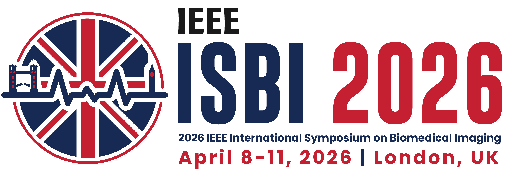
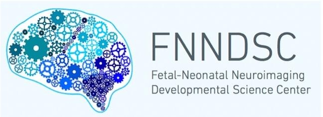

PBDA 2026: 1st Pediatric Brain Data Analysis Workshop



Introduction
Pediatric brain health is critically important for lifelong development and overall well-being. Early childhood represents a unique window of rapid neurodevelopment, during which structural and functional alterations serve as key biomarkers for long-term cognitive and motor outcomes. Yet, despite its significance, the pediatric brain remains challenging to study due to limited data availability, dynamic morphology, and a lack of specialized analytical tools. Moreover, the multimodal integration of neuroimaging with electronic health records, radiology reports, genomics, and social determinants of health remains largely underexplored. We hope this workshop will broaden the scope to encompass infant and pediatric brain data more comprehensively, addressing diverse conditions, multimodal data integration, and clinically relevant algorithm development. In doing so, we aim to unite clinicians, engineers, and scientists to develop machine learning models with strong clinical relevance, while promoting reproducibility, explainability, and real-world clinical adoption.
Important Dates
| Abstract Registration Open | 1/30/2025 |
| Paper Submission Deadline | 3/7/2026 |
| Notification | 3/10/2026 |
| Camera Ready | 3/13/2026 |
| 1st PBDA Workshop Date | TBD |
Call for Papers
We invite submissions on topics related to pediatric brain data analysis, including multimodal benchmarks, machine learning algorithms, clinical applications, and open datasets.
Topics include (but are not limited to):
- Lesion segmentation and detection for pediatric brain injury
- Multimodal integration of imaging, EHR, genetics, and socio-demographic data in pediatric domain
- Explainability, interpretability, and clinically relevant AI in pediatric domain
- Benchmarking and open-science resource sharing for pediatric data
Submission Tracks
-
Full Paper Track
Submit original research papers of up to 4 pages (main content) following the official ISBI format. -
Abstract Track
Submit a 1-page abstract describing preliminary results, new ideas, or ongoing work. -
Benchmark/Dataset Track
Submit work on datasets, benchmarks, or open resources in either 4 pages or 1 page.
Submission Website
Please submit your paper through OpenReview:
ISBI 2026 Workshop PBDA
Proceedings
Accepted papers will be published in the ISBI conference proceedings
1st Pediatric Brain Data Analysis Workshop, April 9, 2026 (Starting at 8:00 AM, London Time)
In Conjunction with ISBI 2026
Session 1 — Accelerating AI for Pediatric Brain Data Analysis
| Time | Title | Speaker |
|---|---|---|
| 08:00–08:15 AM | Opening Remarks & Introduction | Prof. Yangming Ou |
| 08:15–09:00 AM |
Keynote Talk 1 Title: Developing Human Connectome |
Prof. David Edwards |
| 09:00–09:30 AM | Coffee Break | — |
| 09:30–10:15 AM |
Keynote Talk 2 Title: AI Techniques for Pediatric Brain Research |
Prof. Gang Li |
| 10:15–11:00 AM |
Keynote Talk 3 Title: Neuroprotection in Low- and Middle-Income Countries |
Dr. Garegrat Reema, MD |
| 11:00 AM–12:00 PM | Lunch Break | — |
Session 2 — From Benchmarking to Clinical Translation in Pediatric AI
| Time | Title | Speaker |
|---|---|---|
| 12:00–12:45 PM | Towards Clinical AI for Neonatal Brain Injury: Datasets, Algorithms and Clinical Reasoning | Dr. Rina Bao |
| 12:45–01:30 PM | Continuous Representations for Perinatal Brain Development: From Cohorts to Individuals | Maik Dannecker |
| 01:30–02:00 PM | Coffee Break | — |
| 02:00–02:15 PM | Oral Paper Presentation | — |
| 02:15–03:00 PM | Keynote Talk 4 Title: Uncovering early brain development: Predictive biomarkers from Fetal MRI |
Prof. Kiho Im |
| 03:00–03:45 PM |
From Benchmarking & Evaluation to Clinical Deployment (Consortium Effort: Bridging Among Clinicians and Algorithm Developers) |
Prof. Yangming Ou |
Organizers
Contact
Rina Bao, rina.bao@childrens.harvard.edu
Acknowledgments
Thanks to visualdialog.org for the webpage format.